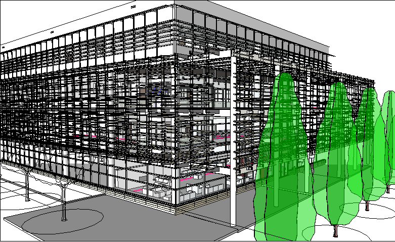
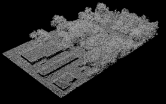
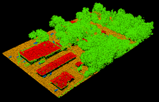
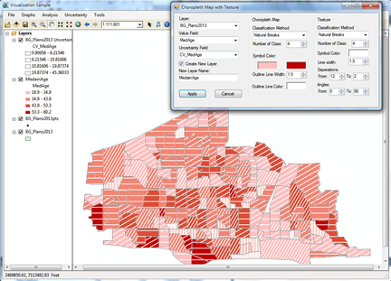
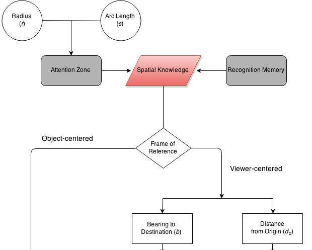
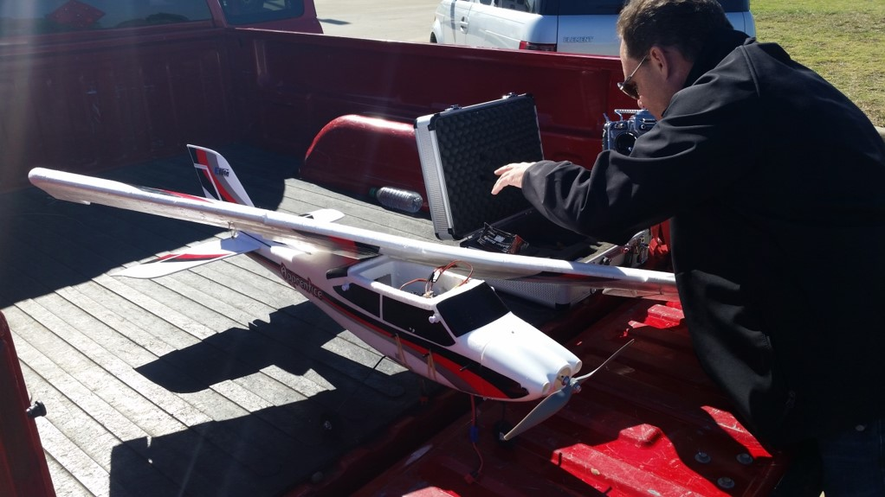

GeoDev at UTD
Bryan Chastain, Ph.D.
Geospatial Information Sciences
University of Texas at Dallas
UTD: EDC
UTD GIS Program now an official Esri Development Center (EDC)
EDC
Special status for select universities who challenge their students to develop innovative geospatial applications.
EDC
Students at EDC programs gain special access to Esri software and have opportunities to be recognized for their accomplishments.
UTD: EDC
Although just joined, already active in the program.
Students already competing for international recognition.
My Projects
A few GeoDev-related projects
iSIM
Python-based software for creating dam inundation maps for local govt emergency planning.Campus Mapping
Automating a solution for Facilities CAD to GIS integration.
SciPy Tinkering
Currently working on porting spatial statistics models from R to SciPy.
Will present at SciPy2015 in Austin.
Student Projects
Very small sample of what students are developing now
LiDAR Point Cloud Classification
Uses segmentation method and CUDA parallel processing.
by Feng Ni
Bivariate Mapping Techniques
How to display two variables at once?
ArcEngine, .NET, and R
by Hyeongmo Koo
Simulating Alzheimer Patient Movement
Using Java agent-based modelling to gain a better understanding of the movements of cognitively impaired pedestrians
by Amir Najian
Drone Image Georeferencing
Developing a method for automatically georeferencing imagery captured from drones.
by Randall Morris
Want to learn more?
Want to be informed about UTD GIS events (GIS Day, colloquia, research, etc.)?
E-mail chastain@utdallas.edu